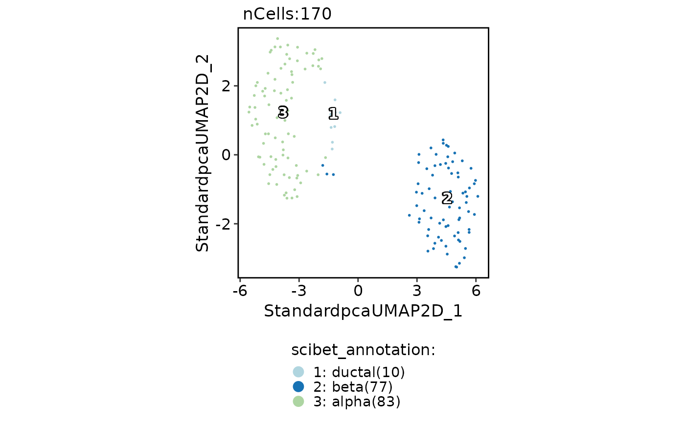
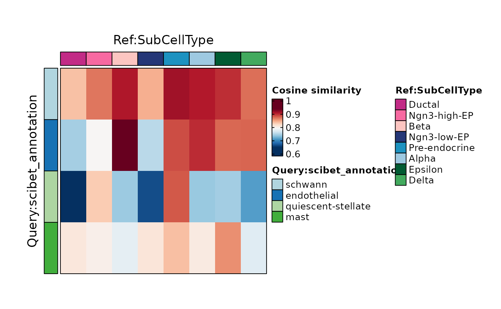
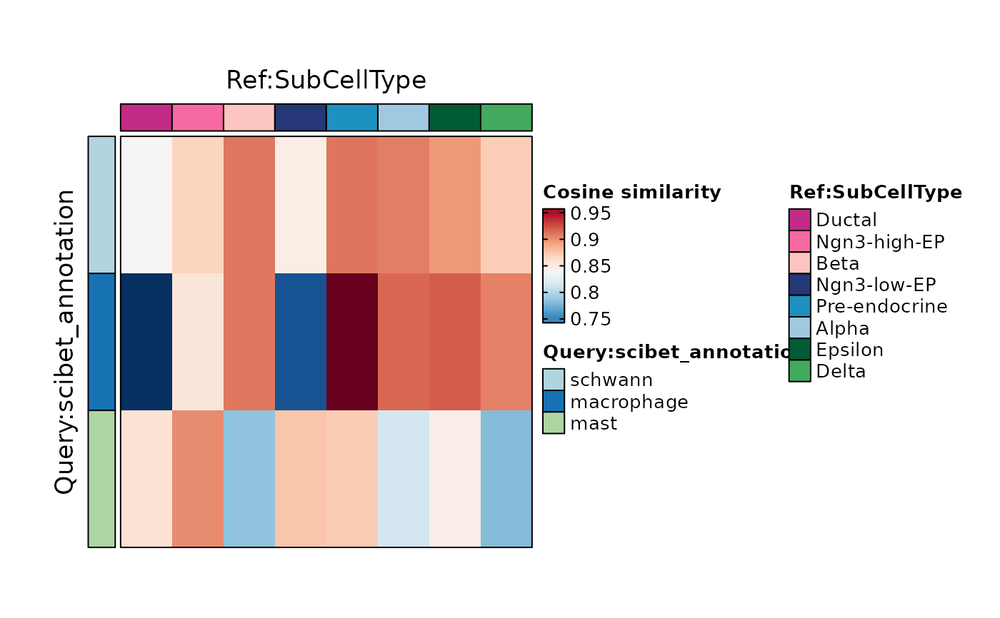

Run a native scop implementation of the core SciBet classifier using a
labeled reference Seurat object.
Usage
RunSciBet(
srt_query,
srt_ref,
ref_group,
query_group = NULL,
query_assay = NULL,
ref_assay = NULL,
query_layer = "counts",
ref_layer = "counts",
features = NULL,
nfeatures = 1000,
additional_features_per_class = 0,
input_transform = c("auto", "none", "expm1"),
prefix = "scibet",
store_model = TRUE,
verbose = TRUE
)Arguments
- srt_query
An object of class Seurat to be annotated with cell types.
- srt_ref
An object of class Seurat storing the reference cells.
- ref_group
A character vector specifying the column name in the
srt_refmetadata that represents the cell grouping.- query_group
A character vector specifying the column name in the
srt_querymetadata that represents the cell grouping.- query_assay
A character vector specifying the assay to be used for the query data. Default is the default assay of the
srt_queryobject.- ref_assay
A character vector specifying the assay to be used for the reference data. Default is the default assay of the
srt_refobject.- query_layer, ref_layer
Assay layers used for query and reference.
- features
Candidate features used by SciBet. If
NULL, common genes between query and reference are used.- nfeatures
Number of entropy-test features selected from
features.- additional_features_per_class
Additional high-expression features selected per reference class.
- input_transform
How to transform extracted values before SciBet's internal
log1pstep."auto"appliesexpm1to"data"layers and no transform otherwise.- prefix
Prefix for metadata columns.
- store_model
Whether to store the SciBet core and probabilities in
srt_query@tools.- verbose
Whether to print the message. Default is
TRUE.
Value
A Seurat object with SciBet annotations in metadata and results in
srt_query@tools[["SciBet"]].
Examples
data(panc8_sub)
genenames <- make.unique(
thisutils::capitalize(
rownames(panc8_sub),
force_tolower = TRUE
)
)
names(genenames) <- rownames(panc8_sub)
panc8_sub <- RenameFeatures(
panc8_sub,
newnames = genenames
)
#> ℹ [2026-05-12 05:14:24] Rename features for the assay: RNA
data(pancreas_sub)
pancreas_sub <- RunSciBet(
srt_query = pancreas_sub,
srt_ref = panc8_sub,
ref_group = "celltype",
nfeatures = 200
)
#> ℹ [2026-05-12 05:14:25] Run native SciBet with 12928 candidate features and 13 reference classes
#> ℹ [2026-05-12 05:14:26] SciBet annotations stored in metadata column "scibet_annotation"
pancreas_sub <- standard_scop(pancreas_sub, verbose = FALSE)
#> ℹ [2026-05-12 05:14:30] Skip `log1p()` because `layer = data` is not "counts"
CellDimPlot(
pancreas_sub,
group.by = c("SubCellType", "scibet_annotation"),
xlab = "UMAP_1",
ylab = "UMAP_2"
)

ht <- CellCorHeatmap(
srt_query = pancreas_sub,
srt_ref = pancreas_sub,
query_group = "scibet_annotation",
ref_group = "SubCellType",
width = 3,
height = 3
)
#> ℹ [2026-05-12 05:14:41] Use the HVF to calculate distance metric
#> ℹ [2026-05-12 05:14:41] Use [1] 2000 features to calculate distance.
#> ℹ [2026-05-12 05:14:41] Detected query data type: "log_normalized_counts"
#> ℹ [2026-05-12 05:14:41] Detected reference data type: "log_normalized_counts"
#> ℹ [2026-05-12 05:14:41] Calculate similarity...
#> ℹ [2026-05-12 05:14:41] Use raw method to find neighbors
#> ℹ [2026-05-12 05:14:41] Predict cell type...

ht$plot
